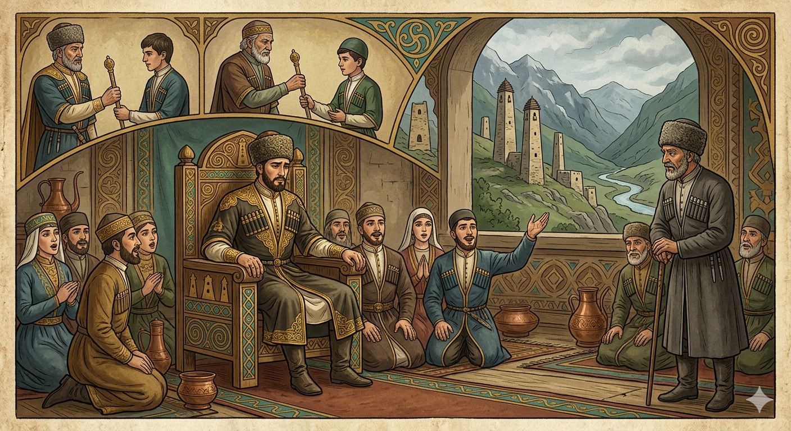

И.А. Дахкильгов. Хьехаме дувцарш - поучительные рассказы-притчи.
И.А. Дахкильгов. Хьехаме дувцарш - поучительные рассказы-притчи. Из ингушского фольклора.

Паччахьаш хувцалуш бецаре
Шийна эшаш мел дола хӀама долаш, вахаш-лелаш хиннача цхьан паччахьа цкъа ший эздешка аьнна хиннад: - Ма дика да паччахь хила. ЦӀаккха кхоача ца луш хила дезар паччахьал. Шоана фу хет цох? Берригаш болабеннаб, геттар нийса да, хьаькъалца аьнна да, иштта хилча дика да, яха. Эздешта юкъе цаӀ хиннав бакъдар мара ца оалачарех. Цудухьа из шийна юхера дӀавоалийташ хиннавац паччахьо. Цунга хаьттад цо тӀаккха: - Паччахь, - аьнна, жоп деннад вокхо, - хьай даьгара паччахьал кхаьчад хьога, цунна из кхаьчад ший даьгара иштта хьадоагӀаш да дукхача ханара денна. Хьажал, цхьаннега кхаьчачул тӀехьагӀа циггач сеца а сеца, цӀаккха ер паччахьал кхоачалуш децаре, хьога а кхоачаргдарий ер паччахьал? ХӀама аьннадац паччахьа. Бакъдолчоа духьала ала хӀама дий?
РУССКИЙ
Если бы цари не сменялись
В полном достатке и богатстве, в огружении льстивых приближенных жил в свое удовольствие некий царь. Как-то он спросил их: "Как бы было хорошо, если бы мое царствование было бесконечным, вечным. Что вы об этом думаете?" Придворные начали хвалить царя, приговаривая: "Верно сказано. Мудрое изречение. Было бы лучше, если бы твое царствование длилось вечно!". Один из придворных был правдолюбцем, и потому царь постоянно держал его при себе. Он отмалчивался, и тогда царь потребовал от него ответа. Мудрый придворный сказал: "Тебе царство досталось от твоего отца. Он, в свою очередь, получил его от своего отца, твоего деда. Так ведется издревле. Подумай сам, если бы царствование оставалось навечно в одних руках и не переходило по наследству, разве оно досталось бы тебе?" Ничего не ответил царь. А разве можно что-нибудь возразить против правды?
ENGLISH
If kings did not come and go
Surrounded by flattering courtiers and living in complete abundance and wealth, a certain king lived as he pleased. One day he asked them: "How wonderful it would be if my reign were endless, eternal. What do you think of that?" The courtiers began to praise the king, saying: "Well said. A wise saying. It would be better if your reign were to last for ever!" One of the courtiers was a man of truth, and for that reason the king always kept him by his side. He remained silent, and so the king demanded an answer from him. The wise courtier said: "You inherited the kingdom from your father. He, in turn, received it from his father, your grandfather. This is how it has been since time immemorial. Think for yourself: if the reign were to remain forever in one set of hands and were not passed down by inheritance, would it have come to you?" The king said nothing. And can one really object to the truth?
НОХЧИЙН
Паччахьий ца хийцаделча
Хьал а деза а долуш, шен девне долу цхьабуса нах гонах хьовзаш, шен реза долуш дуьне вехар паччахь хилла. Цхьана хана цо хаттар делла царна: «Мел дика хургдара, сан паччахьалла бохалуш йоцуш, гуттаренна хилча. ХӀун ойла ду шоьга хӀокхух?». Девна нах паччахь хестабо долайелла, дуьйцуш: «Бакъ дийцина. Хьекъал долу дош ду. Дика хургдара, хьан паччахьалла бохалуш йоцуш хилча!». Девна нахах цхьаъ бакъдолу дийца лаьара стаг хилла, цундела паччахьо, массо хана, шеца лаьцна вара из. Иза ца дийцаш дара, тӀаккха паччахьо цунна жоп доьхуш дели. Хьекъал долу девна стага аьлла: «Хьуна паччахьалла кхаьчна хьайн дера. Из, шен агӀор, шен дера, хьайн деда, схьаэцна. Иштта хила ду хена дуьйна. Шеха ойла йе, паччахьалла шен цкъа лаьцначу куьйгаш чохь дӀакхаьчна ца хилча, тӀаьхьенга ца долуш, - тарлур ду хьуна кхачар из?» ХӀумма а жоп ца делла паччахьо. ХӀумма ала мега бакъдолчунна духьал?
ПОГОВОРКИ
Бакъдар дувце, мотт цӀена хул; харцдар дувце, бӀеха а хул. Чист язык, говорящий правду, а неправедный язык – грязный. A tongue that speaks truth stays clean; a tongue that speaks lies grows filthy. Бакъдерг дийцахь, мотт цӀена хуьлу; харцдерг дийцахь, мотт боьха а хуьлу.Бакъдолчоаи харцдолчоаи юкъе пордув миссел юкъ йоацаш хул. Бывает, что между правдой и кривдой расстояние не толще пленки. Sometimes truth and falsehood are separated by no more than a thin film. Бакъдолчунна а харцдолчунна а йуккъе пардо санна бен йукъ йоцуш хуьлу.Ва а вий-те шийх аьла ца хетар? Есть ли такой мужчина, который себя князем не считает? Is there any man who doesn't think of himself as a prince? Ва а вуй-те шех эла ца хетарг?Гайна-ганза бакъдар тӀадаланза дусаргдац. Фу пайда ба мичча ханна из тӀадаьннадар, аьнна? Рано или поздно, правда выйдет наружу. А какой толк, что она когда-то выйдет? Sooner or later, the truth will come out. But what's the point of it coming out someday? Йа тӀаьхьа, йа хьалха бакъдерг тӀедаланза дуьсур дац. ХӀун пайда бу мичча хенна иза тӀедерадар, аьлла?Дукха Ӏохайна вагӀачун хаче эйла зарзаяьннай. У того, кто много сидит, штаны протерлись. One who sits around too much wears through the seat of their trousers. Дукха охьахиъна ваьхначун хечин айла зоьрза йаьлла.Массане а “хьа духьа лайла тхо” яха нус, “сона хьалха лалда шо” яха яьннай. Невеста, которую лелеяли, приговаривая: “Да умрем мы вместо тебя”, - стала говорить: “Да умрете вы вместо меня!”. The bride once told, "We would die in your place," ended up saying, "May you all die in mine." Мацах а "хьан дуьхьа лойла тхо" баьхна нус, "суна хьалха лойла шу" баха йаьлла.Паччахьа вордо пхьагал лаьцай. Царская карета зайца поймала. Even the tsar's carriage caught a hare. Паччахьан вордано пхьагал лаьцна.Харца ма ле – бакъдар хӀаьта а тӀадаланза дусаргдац. Не лги, правда ведь все равно выйдет наружу. Don't lie — the truth will come out anyway. Харца ма ле, - бакъдерг мухха делахь а гучудаланза дуьсур дац.Ховр малав – хоаттар ва, хоаттар малав – ховр ва. Знает тот, кто спрашивает: спрашивает тот, кто знает. The one who knows is the one who answers; the one who asks is the one who wants to know. Хуург мила ву - хоттург ву, хоттург мила ву - хуург ву.ЦӀенавар цӀерала кхессача а ваьгавац. Правдивый и в огне не горит. A truthful man will not burn even if cast into fire. ЦӀенаверг цӀерга кхоьссича а ваьгна вац.Ший коча юкъе кхы дикагӀавар-ма вац. В моей рубахе нет никого, лучше меня. There's no one better than me within my own shirt. Шен коча йуккъехь кхин дикахверг ма вац.ЯьгӀача берза цӀог чкъормадаьннад. У засидевшегося волка хвост облез. The tail of the wolf that lingered too long went bald. Йехачу берзан цӀог тиладелла.